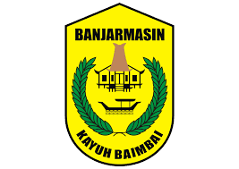
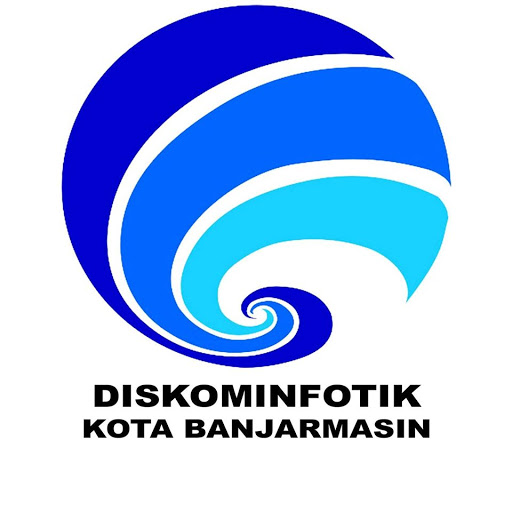

Wadah pengembangan kompetensi mahasiswa dalam bidang teknologi informasi, administrasi pemerintahan, pelayanan publik, dan transformasi digital.

Total Pendaftar
Diterima
Pending
Sisa Kuota
Siapkan dokumen berikut sebelum melakukan pendaftaran.
Surat resmi dari kampus atau Sekolah.
Kartu Tanda Mahasiswa atau Kartu Tanda Peserta Didik aktif.
CV terbaru dan lengkap.
Unduh atau akses utilitas internal untuk memaksimalkan performa operasional kerja selama program magang berlangsung.
Sekitar 3–7 hari kerja.
Ya, peserta yang menyelesaikan program akan mendapatkan sertifikat.
Gunakan nomor pengajuan pada menu Cek Status.